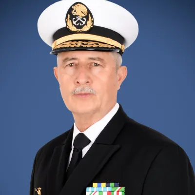
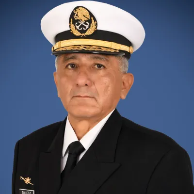
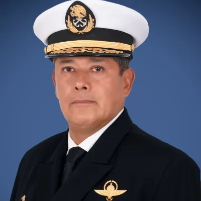
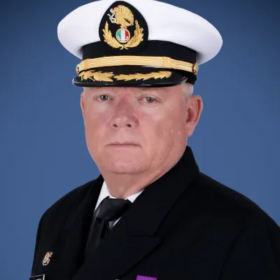

Altos Mandos de la Secretaría de Marina (SEMAR)
El conocimiento del organigrama, jerarquía y titulares del Alto Mando Naval es piedra angular de la disciplina y preparación en la Armada de México. Domina sus nombres oficiales, cargos y reconocimiento visual a través de nuestros 6 módulos interactivos de estudio.
6 Modos de Práctica Interactiva
Elige la modalidad para ejercitar memoria fotográfica, velocidad y precisión jerárquica.
Identifica por Imagen
Pon a prueba tu agudeza visual asociando la fotografía oficial con el nombre y grado correcto de los titulares navales.
Contra el Reloj
10 preguntas variadas con cronómetro regresivo de 15 segundos para entrenar reflejos ante situaciones de alta presión.
Elige el Cargo
Dado el nombre del almirante, selecciona con exactitud el puesto o jefatura que encabeza según la Ley Orgánica.
Ordena por Cargos
Demuestra tu conocimiento del orden protocolario y cadena de mando organizando las funciones de mayor a menor jerarquía.
Construye Nombre Completo
A partir de la insignia y cargo, pulsa las palabras en orden estricto para armar el nombre protocolario sin errores.
Selecciona Apellidos
Evita confusiones habituales en exámenes seleccionando con precisión el binomio de apellidos paterno y materno de cada mando.
Titulares del Alto Mando Naval Mexicano
Conoce a los almirantes y directivos que integran la conducción estratégica de la Secretaría de Marina.
Raymundo Pedro Morales Ángeles
Almirante
Secretario de Marina
Máxima autoridad ejecutiva y operativa de la Armada de México; responsable de la defensa marítima y soberanía nacional.
José Barradas Cobos
Almirante
Subsecretario de Marina
Asiste directamente al Secretario y suple sus ausencias; coordina planes operativos, tecnológicos e interinstitucionales.

Francisco Guillermo Escamilla Cázares
Almirante
Oficial Mayor de Marina
Dirige la gestión de recursos humanos, financieros, presupuesto, adquisiciones y logística integral de la institución.

Gerardo de Jesús Toledo Guzmán
Almirante
Inspector y Contralor General
Encargado de la supervisión de la disciplina militar, auditoría de recursos, apego a derechos humanos y legalidad interna.

José Manuel Salinas Pérez
Almirante
Jefe del Estado Mayor General de la Armada
Órgano técnico y asesor del Alto Mando; diseña planes estratégicos, operaciones navales y doctrina de combate.

Manuel Fernando Gutiérrez Gallardo
Capitán de Altura
Coordinador General de Puertos y Marina Mercante
Responsable de la administración del sistema portuario nacional, transporte marítimo civil y navegación comercial en México.
❓ Preguntas Frecuentes sobre el Alto Mando Naval
¿Cómo se estructura el Mando Superior en la Ley Orgánica?
De conformidad con la Ley Orgánica de la Armada de México, el Mando Supremo corresponde al Presidente de los Estados Unidos Mexicanos, mientras que el Alto Mando de la Armada es ejercido por el Secretario de Marina. La línea de mando directo continúa con el Subsecretario, Oficial Mayor, Inspector y Contralor General y Jefe del Estado Mayor General.
¿Qué diferencia hay entre grado y cargo militar?
El grado militar (por ejemplo: Almirante, Vicealmirante o Contraalmirante) refleja la jerarquía escalafonaria permanente conferida a un oficial en virtud de su carrera. En contraste, el cargo (como Secretario de Marina u Oficial Mayor) es la función o puesto específico temporal asignado por el Alto Mando.
¿Cómo prepararse eficazmente para evaluaciones navales?
La metodología más efectiva combina la memorización activa (Active Recall) mediante cuestionarios de reconocimiento visual y de cargos, junto con el repaso de la Ley Orgánica y el Reglamento del Servicio Interior de los Buques de la Armada de México.
¿Quieres repasar más temas doctrinales de la Armada?
Accede a nuestro simulador central de Cultura Naval o repasa insignias en el módulo de Grados y Jerarquías.